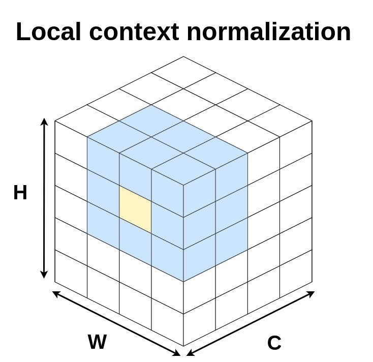

Research Projects
-
Geospatial analytics leverages spatial data, location data, satellite and aerial imagery or any other form of geographic information, using artificial intelligence to gather usable insights and structured information for various applications. We combine geospatial data with machine learning in collaboration with partners at universities, conservation agencies, and NGOs in projects that support disaster response, humanitarian action and conservation efforts.
-

Batch normalization has been widely used to improve optimization in deep neural networks. While the uncertainty in batch statistics can act as a regularizer, using these dataset statistics specific to the training set impairs generalization in certain tasks. We proposed local context normalization as a normalization layer in deep neural networks.
-
The land cover mapping problem, at country-level scales, is challenging for common deep learning methods due to the scarcity of high-resolution labels, as well as variation in geography and quality of input images. However, multiple satellite imagery and low-resolution ground truth label sources are widely available and can be used to improve model training efforts.
-
Rapid development of renewable energy sources is critical to mitigate climate change. Many countries are on an accelerated development track for renewable energy. Given the large land footprint needed to meet these renewable energy targets, the potential for land use conflicts over environmental and social values is high. To expedite development of renewable energy while minimizing its environmental impact, land use planners will need access to up-to-date and accurate geo-spatial information of photovoltaic and wind infrastructure. We use geospatial machine learning to map and monitor renewable energy development at scale.
-
Glacier mapping is key to ecological monitoring in the Hindu Kush Himalaya region. Climate change poses a risk to individuals whose livelihoods depend on the health of glacier ecosystems. In this work, we present a machine learning based approach to support ecological monitoring, with a focus on glaciers. Our approach is based on semi-automated mapping from satellite images.
-

We study adversarial examples in the context of non-RBG images. We are also exploring other cyber-security related adversarial machine learning problems.